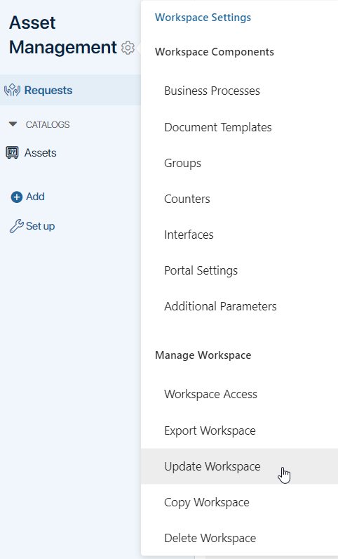
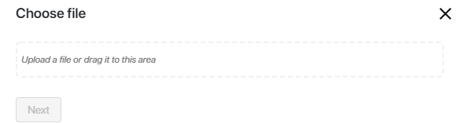
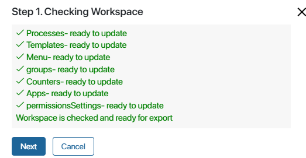
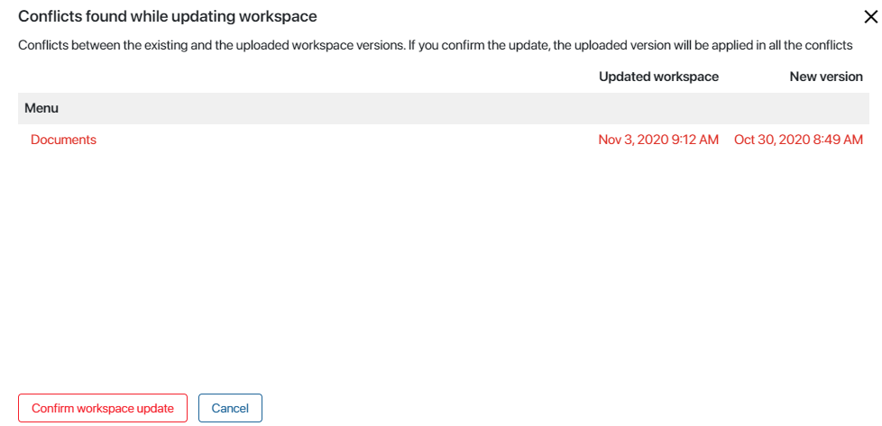
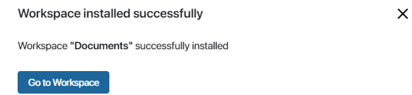

This feature allows you to automatically apply updates to a workspace from an .e365 file.
For example, the order processing procedure has changed in one of the divisions of your company, and this has had a positive effect. To customize the work in other divisions in the same way, you can export the updated workspace and use it to update the other ones. It's faster and more reliable than manual updates.
The updating procedure is similar to the importing one. However, when you update a workspace, you make changes to the existing one instead of creating a new workspace.
начало внимание
Only the users included in the Administrators group can update workspaces.
конец внимание
Start update
- To start updating a Workspace, click next to its name and select Update Workspace.

- In the window that opens, upload an .e365 file from your computer or from system files containing the previously exported workspace. Click Next.

If you are updating a workspace that was created or modified in a newer version of the system (e.g., 2024.4) than your current version (e.g., 2024.1), a warning will appear. The update may not complete, or the workspace may not function correctly, as there may be changes in the newer version that are incompatible with your version. Choose whether to cancel or proceed with the update process.
- A version check of the workspace from the uploaded file will be initiated. If errors are found, such as duplicate pages, you will not be able to update the workspace. If the check is successful, click Next.

- The comparison between the existing and uploaded versions will start.
If there are differences between the versions (for example, a business process was edited, app settings changed, etc.), the update is paused. In the provided window you need to accept the changes and apply the new version of the file.
Note that conflicts cannot be resolved individually. You need to either accept all the changes you make, or cancel the update.

If you previously created workspace components (business processes, apps, etc.) that are not included in the uploaded version of the workspace, their absence in the new version will not be regarded as a conflict by the system. The update will not affect them.
- If access rights to the workspace, its app, or page were edited on the target platform, you will see a list of discrepancies with the permissions set in the version being uploaded. Choose which permission settings you want to update, i.e., apply the rights as set in the loaded version of the workspace. You can leave all rights as they are set in the existing version.
During updates, “false” conflicts in access settings may occur
The history of access rights changes is recorded starting from system version 2024.1 and may be missing in existing workspaces. In such cases, the conflict line will display the value <Unknown>, indicating there are no records of changes in current rights. In such lines, you can either update or not update the rights settings, i.e., ignore them. To prevent this “false” conflict from recurring, export the workspace in a system version no lower than 2024.1. During the export, the history of changes will be recorded in the structure of the workspace’s access rights. |
- When the update is complete, click Go to Workspace:

Found a typo? Select it and press Ctrl+Enter to send us feedback